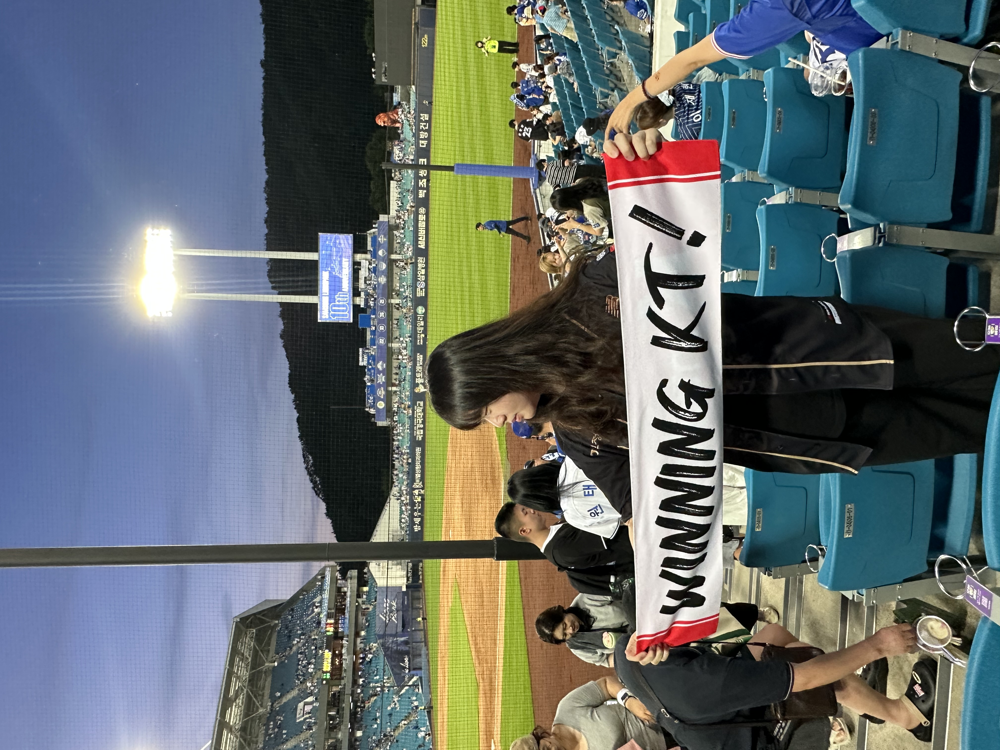
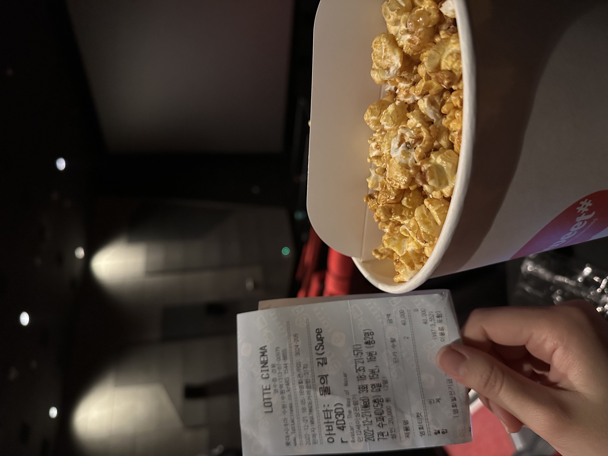

←
🎉 나의 휴일 일과
마킹된 부분을 클릭하면 사진을 볼 수 있어요!
🛏️ 아침 일과
- 10:00 ☀️ 기상
-
11:00
🍳 아침식사


- 12:00 🏸 운동하기
🚶 오후 활동
- 13:00 ☕️ 커피타임
- 14:30 📚 공부하기
-
16:00
⚾️ 야구장가기


🎬 저녁과 밤
- 18:00 🥘 맛있는 저녁 먹기
-
20:00
🎬 영화 보기

- 23:00 😴 쉬는타임